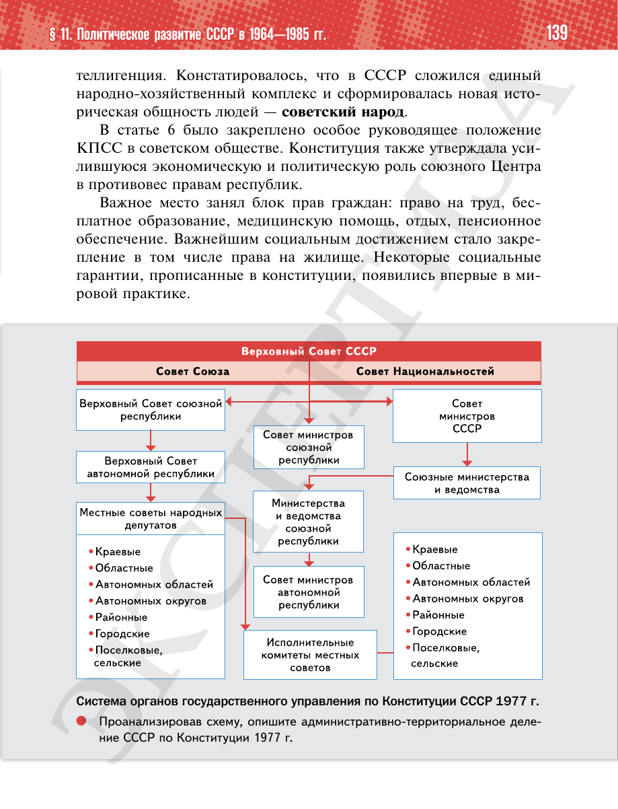

⌂
Мединский.нет
Последнее обновление: 30.08.2026
Мединский.нет
›
История России. 11 класс. Базовый уровень
›
Глава I. СССР в 1945—1991 гг.
›
§ 11. Политическое развитие СССР в 1964—1985 гг.
›
стр. 140

← стр. 139
Оглавление
стр. 141 →
×